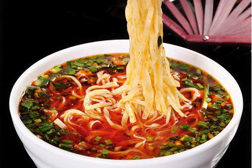

大家好，我是佘坤
一个并不集美貌与才华于一身的男子
日常中我更希望是这样的

一个并不集美貌与才华于一身的男子
日常中我更希望是这样的
我来自古都西安市长安，一般我会说我是来自东土大唐。毕业陕西邮电学院管理系电子商务专业， 个人来说熟练掌握电商相关专业中的一小部分，像是销售，网推，运营等。大学基本不在教室。基本就这样。
刚才那不是西安人眼里的西安，西安人眼里的西安是酱紫的
幸福的杭州人 晚饭后我去超市买一盒牛奶打算明天早上和，结果我一出超市门口那个保安就让我喝一口，然后我上公交车， 司机也让我喝一口，我下了公交车，走了一段路碰到执勤警察又让我喝了一口，眼看就剩一口了， 我努力藏住留到明天喝，回到小区门口，保安又让我喝了最后一口。我的早餐奶就这样在我睡觉之前全喝完了。